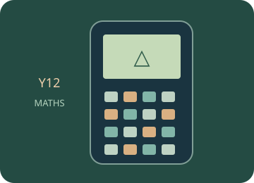

YEAR 12 · IB MATHEMATICS · CALCULATOR SKILLS
Geometry and trigonometry
Choose angle units and use roots, trigonometric ratios and inverse functions.
Choose a worked calculator exercise. The trainer highlights the next physical key and advances when you use it correctly. Then repeat in free practice.

01 · GUIDED SIMULATOR PRACTICE
Use the calculator, one key at a time.
Loading the calculator exercises…
02 · CALCULATOR REFERENCE
Related manual procedures
The source trainer contains 42 skill pages. Reviewed procedures and outlines awaiting physical-device verification are labelled separately. A guided simulator example does not certify every menu on a physical calculator.
Practise, then explain.
Predict the result, follow the highlighted keys and interpret the calculator’s answer. This is practice: calculator actions are not sent to the teacher dashboard. These calculator activities support the examples and explanations in your class lessons.
Open the free calculator →